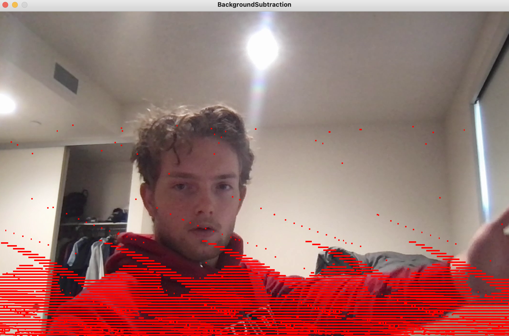
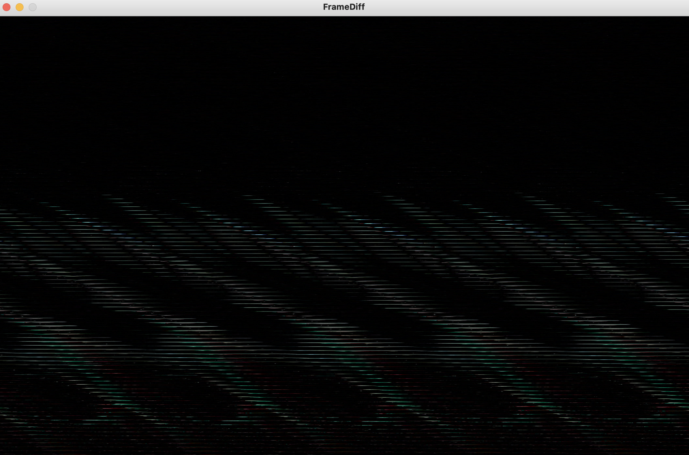

In the /final/ repository, run sh make.sh to to
execute program.
app code: Processing
app code: ChucK
As of now, I am determining the best algorithm to process video using frame differentiation. Below I have included screenshots of the two algorithms I am toying with. In one, red contours are used to visualize the motion that the program interprets against a background. This is known as background subtraction. This is built upon the OpenCV library for Processing using image subtraction and filtering (blur, gray-scale) to mitigate noise.
The second algorithm uses pure frame differentiation using a mask of the prev movie frame over the current frame and displaying the result in gray-scale.
In both instances, the program outputs an integer frame difference variable as the scale of variability between frames. It is from this value that I am going to build a level of motion density variable which will be sent to ChucK over OSC.
Background Subtraction with OpenCV Example:

Frame Differentiation without OpenCV Example:

Background Subtraction with OpenCV Code
Frame Differentiation without OpenCV Code
Processing OSC Broadcast Server Code
ChucK receives an OSC message containing an integer which corresponds to the
gain of the output sound.
TODO:
ChucK needs to
sweep cleanly between density values which come with each OSC
message.
ChucK needs to output more, better sound.
ChucK OSC Receiver and Sound Generation Code